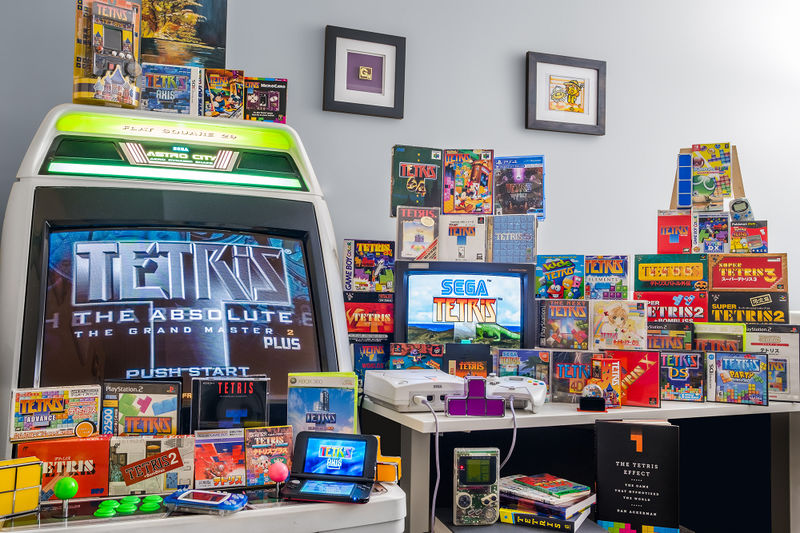
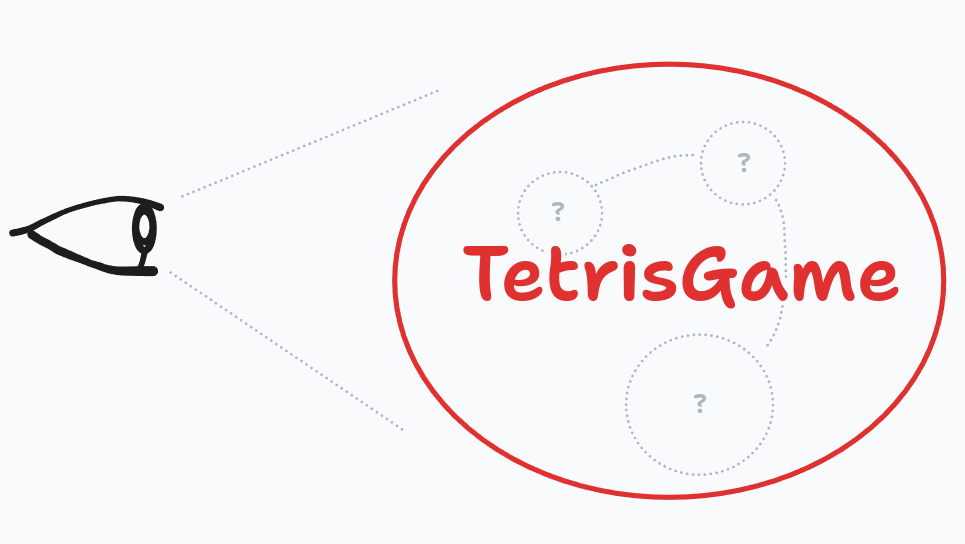

Global Day of Codereatreat 2023
Global Day of Coderetreat
Welcome to a day of deliberate practice and learning!
Which Language? 💬
Spricht jemand nur Deutsch? Bitte melden.
Does anyone speak only English? Please report.
Big Thank you to Nagarro! 💗
Thank you very much for hosting us!
Dinner 🍽️
Who wants to join dinner?
Please raise your hand.
Is this your first Coderetreat? 🥇
Please raise your hand.
What is a Coderetreat? 🤔
A day of deliberate practice and learning.
Deliberate Practice and Learning?
- Not about getting things done
- Doing things differently
- Try out new ideas
- Do it right!
How does it work?
- We work on the same problem repeatedly.
- Try out different approaches.
- Learn from each other.
Practice - reflect - improve! 🥳
Schedule 🕤
| Time | Topic |
|---|---|
| 08:20 | Arrival & Breakfast |
| 09:00 | Welcome at Nagarro |
| 09:10 | Intro Coderetreat 👈 |
| 10:00 | Session 1 by Claus Aichinger |
| 10:50 | Session 2 by Rea Sutter |
| 12:20 | Session 3 by Gregor Riegler |
| 13:30 | Lunch Break |
| 14:20 | Session 4 by Adam Zielinski |
| 15:30 | Session 5 by Roland Germ |
| 16:40 | Final Retrospective |
| 17:00 | Closing |
About us 👋
Facilitators in order of appearance.
- Claus Aichinger @clausaichinger
- Rea Sutter
- Gregor Riegler @gregor_riegler
- Adam Zielinski @adam0x5A
- Roland Germ @rolgerm
What about you? 💐
Let’s get to know each other:
- Who are you?
- Why is it better to be here than elsewhere?
- What will you contribute?
Form groups of three (with people you don’t know).
Code of Conduct 🤝
This code of conduct outlines our expectations for participants within our community:
- Be friendly and patient. Be welcoming.
- Be mindful of your peers.
- Be respectful.
- Be careful in the words that we choose.
Questions?
Today’s Practice 🥷
Tetris🕹️🏗️💯
- Tetris is a popular block-stacking puzzle game
- Created by Alexey Pajitnov in 1985

Pair Programming 🤝
“Pair programming is a conversation between people, where the byproduct is code.”
Pair Programming Habits 🤝
Roles:
- 🧭 Navigator Giving directions, looking ahead
- 🚗 Driver Manipulating the code, concerned with details
Procedure:
- Talk to each other
- Switch roles every regulary
Test-driven Development 🧪
If you write new code, write a test first
If you change code, is it covered by tests?
Today’s slogan 💬
- Exploring different TDD Styles
- Looking at strategies to facilitate test-driven development
How do we get there? 🤓
Revisit same problem repeatedly
Try different strategies to improve your know-how and experience
Questions?
Session 1: Pen & Paper 📝
Focus: Familiarize yourself with the problem
Facilitator: Claus Aichinger
Kata: Tetris

Tetris: Gameplay 🕹️🏗️💯
- Pieces descend onto playing field
- Player arranges pieces to complete lines
- Completed lines disappear and grant points
- Game ends when uncleared lines reach the top
- The more points the better
Strategy: Pen & Paper 📝🤔💬
Before we start coding, let’s think:
- Identify concepts and components
- Simplify!
- Make a sketch
- Be explicit
- Derive test cases
Extra Challenge: Explore Directions 🧭🗺️
How would you implement Tetris?
Inside-Out:
- What is inside?
- How can you drive your implementation outward?
Outside-In:
- What is outside?
- How can you drive your implementation inward?
Find a Partner! 👀
Deliberate Practice and Learning 🤓
Retrospective 🏟️
- How did you simplify?
- What is your first test case?
- What do you think about directions?
Enjoy the Break ☕
And be back in time.
Classical TDD
Focus: Warm up your TDD and pairing muscles
Facilitator: Rea Sutter
Get Your Hands Dirty 🛠️👷🏗️
Classical TDD / Detroit School
Work inside out
Start with a simple test
Switch roles ping-pong style
How to TDD 🤔✅💡
🟥 RED - write a test and see it fail
🟩 GREEN - write minimal amount of code to pass the test
🟨 REFACTOR - don’t add/change functionality!
🔁 REPEAT
How to Ping Pong 🤔🏓💡
🟥 🅰️ writes a test, sees it fail
🟩 🇧 writes the code, sees test(s) succeed
🟨 🅰️ and/or 🇧 refactors, test(s) still green
🟥 🇧 writes the next test, sees it fail
🟩 🅰️ writes the code, sees tests succeed
🟨 🟥 🟩 🟨 etc.
Demo 🧐💻
Find a Partner! 👀
Deliberate Practice and Learning 🤓
Retrospective 🏟️
- What went well?
- What was your first test?
- Which role do you prefer, and why?
Enjoy the Break ☕
And be back in time.
Session 3: Outside-In without Mocks
Focus: Ignore the inside and avoid mocks by using Sociable Tests and State-Based Tests.
Facilitator: Gregor Riegler
Outside you say?
Big Units!

Picture stolen from martinfowler.com
Focus on State!
Find a Partner! 👀
Deliberate Practice and Learning 🤓
Retrospective 🏟️
- What went well?
- What was your first test?
Enjoy the Break ☕
And be back in time.
Session 4: Outside-In with test doubles
Focus: separation of the system under test
and its collaborators 🧬
Facilitator: Adam Zielinski
You’ll never walk alone 🚶
Motivation: often the tested unit relies on other units (collaborators) to fulfill its behaviour
- What’s the unit under test? 🧐 (Separation of concerns)
- Test non-pure interfaces (indirect input / indirect output)
- Keep code simple: fast, minimal, easy to change
- Avoid: fragile tests, non-determinism
Test doubles 🪢
A pattern where you replace a production object for testing purposes
Test double patterns 🥽
- Provide a specific response to a method call
- Fakes: working implementation, oversimplified
- Stubs: provides canned answers
- Verify the behavior of the code under test
- Spy: records information based on how they were called
- Mock: defines expectations of how it will be used
Test doubles goes Tetris 🗼
interface Bottom {
/** Check a piece has contact with bottom */
touches(piece: Piece): boolean
/** Add the piece to the bottom because it has landed */
land(piece: Piece): void
/**
* Check for full lines and remove the returned lines,
* empty when no full lines there
* count from bottom, 0 is lowest.
*/
removeFullLines(): number[]
/** Return max height of the different columns of bottom. */
maximumHeight(): number
}Focus areas
Find a Partner! 👀
Deliberate Practice and Learning 🤓
Retrospective 🏟️
- What went well?
- What was your first test?
- What advantages could you identify when using test doubles?
Enjoy the Break ☕
And be back in time.
Session 5
Focus: Constraints
Facilitator: Roland Germ @rolgerm
What is a constraint 🛝
COUNTABLE NOUN
A constraint is something that limits or controls what you can do.
It slows us down
It restricts our actions
Baby Steps 👼
- Setup a timer for 2 minutes interval when you start.
- Write exactly one test. When the timer rings:
- test is red => delete and restart.
- test is green => continue.
- Restart timer and repeat from 2
Use the same procedure for Refactoring!
Silent/Mute Ping Pong 🤫
- Like Ping Pong Pairs
- Pairs are not allowed to talk
- The test has to be so expressive that it describe its intention
Evil Coder 👻
- Like Mute Ping Pong Pairs
- Other person is a “lazy evil” programmer
- Implements the code that makes the test pass
- May choose an obscure implementation
- May introduce as much complexity as they wish
Ensemble (Mob) Programming 👨👨👧👧
- Who will facilitate a Mob session?
- Group together and take any room outside
- The facilitators will guide you
Find a Partner or Team! 👀
Deliberate Practice and Learning 🤓
Retrospective 🏟️
- Which constraint did you choose?
- What went well?
- What was your first test?
- Which role do you prefer, and why?
Our retreat is coming to an end…
We explored different strategies to facilitate test-driven development 📊
Put a post-it:
- 🟨 What was most intruiging? Aha-effect! ;)
- 🟥 Where would you like to invest?
Final Sharing 🏟️
- What did you enjoy?
- How do you leave?
🤏 Briefly.
You liked it? Come again! 🔁
Coding dojo with Rea @ 2023-11-21
On your way out
say thank you 🤝
Thank you for joining! 🎈
Global Day of Codereatreat 2023 by Softwerkskammer Wien at Nagarro